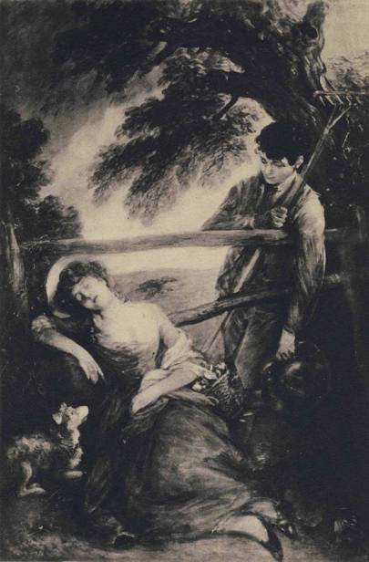
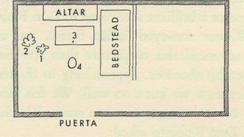
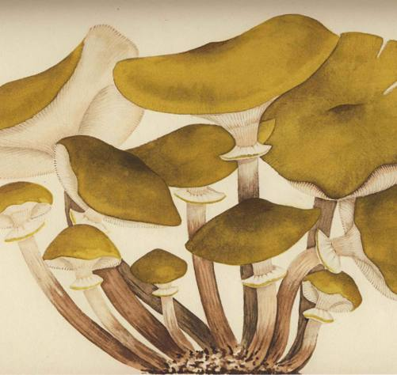

Beware of musherons, moch purslane, gourdes, and al other thinges, whiche wyll sone putrifie.
THERE is no doubt about it: from, earliest times the English have had little use for mushrooms. The Crete Herball of 1526, a translation from the French, voiced the hostility of both peoples:
Fungi ben mussherons. . . There be two maners of them; one maner is deedly and sleeth them that eateth of them and be called tode stooles, and the other dooth not. They that be not deedly haue a grosse gleymy [slimy] moysture that is dysobedyent to nature and dygestyon, and be peryllous and dredfull to eate & therefore it is good to eschew them.
In the 16th century scientific thought had hardly begun to shake itself loose from folk-beliefs of unfathomed antiquity, and compilations such as The Crete Herball are a treasury of such beliefs. The printing press, fresh on the scene, captured and preserved for us the common content of men's minds at that moment in history when the Western World was beginning its slide into the modern era of big changes. And in the case of mushrooms, let us here salute a singular example of the tenacity with which even a great people sometimes clings to its primitive notions. For that naive division of the mushrooms between
the 'two maners of them', the one deadly and the other not, and even these
latter to be avoided - that elemental antipathy, captured for us in the text
of the first comprehensive English herbal, has carried on with undiminished
vigor through four centuries more, down to the present day. Learned myco-
logists write treatises and preach an enlightened gospel, but what do all their
knowledge and all their cautious advice weigh? Small cliques of amateurs
exist, but the public is not stirred. In a recent elaborate American work on
mushrooms the author1 brings himself to write a chapter on 'mycophagy',
but confesses that he himself almost never lets mushrooms enter his mouth!
Not thus does one inspire appetite in others. The repugnance for 'toadstools'
I. Alexander H. Smith in his Mushrooms in their Natural Habitats (Sawyer's Inc., Portland, Oregon, 1949) says as he engages in a lengthy discussion of mycophagy, pp. 121-2: "It is impossible for me to discuss the edibility of even the highly recommended species authoritatively from my own experience since I seldom eat them myself".
is sometimes an aggressive thing. I have seen the English governess, her charges
in tow, advance on the enemy (a lovely and innocent russula, as it happened),
kick it over, and with shudder and grimace crush it with the heel of her big,
low-heeled shoe; turning then to the children, she shepherded them away
from the unclean thing. Thus by an unspoken lesson this creature unwittingly
seared their young minds with the branding iron of an ancient curse. Where
she and her tribe see, in the words of the herbalist, a slimy toadstool, a Russian
beholds 'the fat of the earth'.
As the 16th century drew to a close, in 1597, John Gerarde brought out his
famous Herball or General! Historie of Plantes, an immense and delightful book.
What he says of mushrooms may differ little in substance from The Crete
Herball, but his opulent manner of expressing the same thing deserves the ac-
colade of the reader's attention. The Englishman is venturesome in most things
save food, and never before Gerarde nor since has that peculiar dietary conserva-
tism of the race received more elegant and curious endorsement:
Many wantons that dwell neere the sea, and haue fish at will, are for change of diet to
feede vpon the birds of the mountaines; and such as dwell vpon the hils or champion
grounds, do long after sea-fish; many that haue plenty of both, doe hunger after the
earthie excrescences, called mushrums; whereof some are very venemous and full of
poison; others not so noisome; and neither of them very wholesome meate . . .
Master Gerarde then proceeds to describe one kind that is not bad and straight-
way a dozen that he condemns, saying about a certain species that grows in
"mossie and shadowie woods" that he does "the more briefly passe them ouer,
not purposing to vse many words about such fruitlesse matters". Finally he
comes to his sweeping and memorable conclusions:
Galen amrmeth that they are all very colde and moist, and therefore do approoch vnto a
venemous and murthering facultie; and ingender a clammie, pituitous, and colde nutriment
if they be eaten.
To conclude, fewe of them are good to be eaten; and most of them do suffocate and
strangle the eater. Therefore I giue my simple aduice vnto those that loue such a strange
and newefangled meates, to beware of licking honie among thornes, least the sweetenes
of the one do not countervaile the sharpnes and pricking of the other.
[pp. 1384-6 of first edition]
A few years after Gerarde, in 1609, Sir Michael Scott said his say about
mushrooms in The Philosophers banquet, and here and now we give to his words
new wings:
. . . Sow-beard1 or Mushrome, according to Rasis [the Arabian physician] is cold and
grosse, and being taken raw ingenders flegme, and the chollike, and windinesse in the
guts; neither is it to be eaten but with hot sauce or meate, but the red are not to be eaten
at all. The Todestoole is much worse then the Mushrome: for it hath choaked and killed
many that haue taken it, and the best that it doth, is to breed flegme in the body in
aboundance . . . [Verso of folio 36, wrongly numbered 33]
These famous herbalists whom I have quoted were leaning on the authority
of Dioscorides, Galen, and Rhazes, but they elaborated richly on their sources,
going far beyond the Greek and Arabic writers in maligning the mushroom
tribe, and invoking the oracles only to clothe with their authority the loathing of
the English, which they undertook to express in their full-bodied prose.
Half a century after Gerarde it was still possible for a well-born and educated
Englishman to reach man's estate without having heard of truffles. John Evelyn
at the age of 24 made their acquaintance in France. On September 28, 1644,
he found himself in Vienne, a day's journey by river from Lyons, and there,
as he says in his diary, he "supped and lay, having amongst other dainties, a
dish of truffles, which is a certain earth-nut, found out by a hog trained to it,
and for which those animals are sold at a great price. It is in truth an incompar-
able meat." (The emphasis is mine.)
The Englishman in Evelyn was being diluted by travel. His hospitality to
strange and newfangled meats found no echo in his countryman Jeremy Taylor,
who in 1650-1, in his Holy Living and Dying, strikes the less liberal note:
Fly from all occasions, temptations, loosenesses of company, balls and revellings,
indecent mixtures of wanton dancings, idle talk, private society with strange women,
starings upon a beauteous face, the company of women that are singers, amorous gestures,
garish and wanton dresses, feasts and liberty, banquets and perfumes, wine and strong
drinks, which are made to persecute chastity; some of these being the very prologues to
lust, and the most innocent of them being like condited [seasoned] and pickled mushrooms,
which, if carefully corrected and seldom tasted, may be harmless, but can never do good.
[Chap. 2, 'On Christian Sobriety', Sec. in, 'Remedies against Uncleanness']
It was Jeremy Taylor's privilege to believe in the mortification of the flesh,
but why did he vent his spleen on the humble mushroom? I hope to show
on a later page that he and the herbalists were voicing, unbeknownst to them-
selves, a pre-Christian tabu shared by all the peoples who dwell on the shores
I. Sow-beard = sow-bread; unreported in the Oxford Dictionary in this sense of mushrooms, but familiar as a
name for the cyclamen. In Latin tuber meant both 'truffle' and 'cyclamen', and in Giuseppe Baretti's Italian-
English dictionary, 1832, tartufo is translated by 'sow-bread, a kind of mushroom growing underground'. The
addiction of pigs, especially sows, to underground fungi justified the use of this name for truffles.
of the North Sea. The passage about the condited and pickled mushrooms
follows hard on another that perhaps my readers will thank me for recalling.
The stern author is listing his remedies against 'uncleanness', and here is what
he recommends about food in general:
A spare diet, and a thin coarse table, seldom refreshment, frequent fasts, not violent,
and interrupted with returns to ordinary feeding, but constantly little, unpleasant, of
wholesome but sparing nourishment: for by such cutting off the provisions of victual,
we shall weaken the strengths of our enemy.
Is it uncharitable to venture the opinion that this exhortation to consume
unpleasant food, from Jeremy Taylor's day even unto now, has been more
honour'd by his countrymen in the observance than the breach?
Apparently the Stuarts on recovering the throne of England brought back
with them from across the Channel an appetite for the mushroom world.
How else shall we explain that before the end of the century the Englishman
was commonly referring to the good earthy 'trubs' ? A little later both truffles
and morels began to figure in the cookbooks. For example, Patrick Lamb,
who was for "near fifty years" master-cook to Charles II, James II, William and
Mary, and Queen Anne, in his Royal Cookery or the Compleat Court-Cook
(London, 1726) includes in his menus mushrooms (which he fails to identify),
morels, and truffles. In the extracts filling five volumes that have been published
of Parson James Woodforde's prodigious diary, he refers repeatedly to pickled
mushrooms, to truffles, to morels. Toward the end of the i8th century they
had become a regular feature of this country clergyman's fare, brought to
his door by the folk who had gathered them. Gilbert White in his Observations
on Vegetables reports that a truffle-hunter had called on him "having in his
pocket several large truffles" found in the neighborhood of Selborne; the man
was offering them to him at half a crown a pound. White speaks casually
of the dogs that the truffle-hunter was using to smell out the truffles. It is clear
that truffle hunting was no novelty for him. One might have expected to
find the gentlemen of England in that urbane century relishing the table deli-
cacies familiar to the French and Italians; and since they were also steeped in
the classics, they must have known of the addiction of the epicures of ancient
Rome to mushrooms. But it is startling now to discover from the casual
observations of two rural clergymen that the English rustics in their time
were gathering morels and truffles for the market. In the whole of the
English-speaking world today, does there survive a single truffle-hunter e
(Truffles grow in America also, but few pay attention to them, rarely even

PLATE v. Thomas Gainsborough. The Mushroom Girl. Boston (Mass.), Museum of Fine Arts.
the mycologists. They are one of the New World's still untapped resources.)
That strange false dawn of mycophagy which marked England's i8th century
even attained expression in art when Thomas Gainsborough painted his Mush-
room Girl, a sample of bucolic sentimentality typical of its time and milieu.
Is not this the only occasion in the history of English art when a painter of the
first rank has acknowledged the existence of the fungal world ? And in this case
the basket filled with field mushrooms is only a detail in the composition,
an excuse for a title. There exists in a private collection a second work by
Gainsborough with the same title, a wholly different composition, showing a
child, close up, as she reaches out for mushrooms growing in a field.
Having once taken hold, why did this Arcadian pursuit, so noble in its simpli-
city, die out? Morels and truffles added variety to the Englishman's fare, but
they were destined to vanish from his table in the course of the strange decay
that overcame the English cuisine in the glorious Victorian era. In 1847 the
mycologist Badham was saying of mushrooms that "England is the only country
in Europe where this important and savoury food is, from ignorance or preju-
dice, left to perish ungathered."1 Half a century later,in 1891, another mycologist
who bore the arresting name of Mordecai Cubitt Cooke, in a delightful treatise
on the edible fungi pointed out that "in the time of our grandfathers it was
almost universally believed that our islands produced but one kind of fungus
which was edible."2 His words implied a growth in enlightenment in his own
lifetime that few other observers have detected either then or since his day.
Apart from occasional remarks in the writings of mycologists, the English
have paid little attention to their blindspot concerning mushrooms. So far as
I know, even among the mycologists only one has done justice to the subject,
inveighing against his countrymen's prejudice -William Delisle Hay, who pub-
lished An Elementary Text-book of British Fungi in London in 1887. His voice
crying in the solitudes deserves to be recalled. Speaking of the fungi near the
beginning of his book, he says:
Among this vast family of plants. . . there is but one kind that Englishmen con-
descend to regard with favour. All the rest are lumped together in one sweeping con-
demnation. They are looked upon as vegetable vermin, only made to be destroyed. No
eye can see their beauties; their office is unknown; their varieties are not regarded; they are
hardly allowed a place among nature's lawful children, but are considered something
abnormal, worthless, and inexplicable. By precept and example children are taught from
earliest infancy to despise, loathe, and avoid all kinds of 'toadstools'. The individual who
1. A Treatise on the Esculent Funguses of England, p. vii.
2. British Edible Fungi, p. 17.
desires to engage in the study of them must boldly face a good deal of scorn. He is
laughed at for his strange taste among the better classes, and is actually regarded as a sort
of idiot among the lower orders. No fad or hobby is esteemed so contemptible as that of
'fungus-hunter' or 'toadstool-eater'.
This popular sentiment, which we may coin the word 'fungophobia' to express, is very
curious. If it were human - that is, universal - one would be inclined to set it down as an
instinct, and to reverence it accordingly. But it is not human - it is merely British. It is so
deep and intense a prejudice that it amounts to a national superstition. Fungophobia is
merely a form of ignorance, of course; but its power over the British mind is so immense,
that the mycologist, anxious to impart the knowledge he has gleaned to others, often meets
with scarcely credence or respect. The superstition strikes deep. He who would write or
lecture about Fungi can scarce find readers or hearers. The English scientist investigates
every domain of nature, but leaves this one coldly alone. The English medical man
disdains to inquire into the chemical constitution of Fungi, and is indifferent to and
unknowing of their relations in regard to medicine, toxicology, diet, or hygiene. It is
surely high time that English intelligence should rise superior to this peculiar phase of
ignorance. . . .
It is a striking instance of the confused popular notions of Fungi in England, that hardly
any species have or ever had colloquial English names. They are all 'toadstools', and
therefore are thought unworthy of individual baptism. Can anything more fully de-
monstrate the existence of that deep-rooted prejudice called here 'fungophobia'; . . . In
the countries of the Continent the greater number of species have each their particular
local names. Even the Redskin of America and the Maori of New Zealand have specific
names for their common Fungi. Only we prejudiced Britons have none.
More than six decades have passed since the above lines were penned, and
though the English-speaking world has produced numbers of good mycologists
since then, the substance of the indictment is as true today as when William
Delisle Hay raised his voice in protest.
Hay could have cited Charles Darwin to illustrate his point. This observant
and knowledgeable scientist, in that supreme book of travel, his diary of the
voyage of H. M. S. BEAGLE, remarked in the entry for June i, 1834, that the
natives of Tierra del Fuego relied on a certain arboreal fungus (a species of the
genus cyttaria) for an important part of their diet; and then, almost as though
to supply me with a singularly happy illustration for my argument, our learned
young man showed the limitations of his learning. "At the present time," said
Charles Darwin in 1834, "I think Tierra del Fuego is the only country in the
world where a cryptogamic plant [i.e., a fungus] affords a staple article of
food." The young Charles Darwin knew more about the Fuegians than about
the northern Slavs and Catalans.
As to mycophagy, Darwin revealed a strange lapse in knowledge that amount-
ed to a failure of perception. In him the mycophobia of the English was a mild
affliction, a recessive trait. Sometimes this racial infirmity erupts with terrifying
ferocity. Let the reader consider the following quotation from Mrs. Gwen
Raverat's Period Piece, a book of Victorian reminiscences published in 1953.
Here we learn what mushroom gathering a 1'anglaise can sometimes mean, to
what mad purpose the gentle art of mushroom knowing may be perverted:
In our native woods there grows a kind of toadstool, called in the vernacular THE
STINKHORN, though in Latin it bears a grosser name [the phallus impudicus, of course].
The name is justified, for the fungus can be hunted by the scent alone; and this was Aunt
Etty's great invention: armed with a basket, and a pointed stick, and wearing a special
hunting cloak and gloves, she would sniff her way round the wood, pausing here and
there, her nostrils twitching, when she caught a whiff of her prey; then at last, with a
deadly pounce, she would fall upon her victim, and poke his putrid carcass into her bas-
ket. At the end of the day's sport, the catch was brought back and burnt in the deepest
secrecy on the drawing-room fire, with the door locked; because of the morals of the maids.
[pp.135-6]
Who was Aunt Etty ? She was Charles Darwin's daughter!
In all the enchanted pages about England's rural life that W. H. Hudson
gave to the world around the turn of the present century, there are scarcely
a half dozen references to mushrooms. Once he conveys in a sentence or two
the magic spell cast on the perceptive beholder when he first discovers a 'fairy-
ring' - those meadow mushrooms that ofttimes grow in perfect circles, the
circles expanding by tiny stages each year through decades and even perhaps
centuries. Elsewhere Hudson speaks of his having gathered mushrooms, but
from the colorless reference it seems clear that he was speaking only of the
ordinary field mushroom. Thus even Hudson, with ah1 his sensibility to nature,
never opened his eyes to the mushroom world.1
Thoreau did somewhat better. His allusions in Walden are trifling, but in his
superb Journals he speaks of the fungi time and again. In passages of luminous
beauty he vibrates to their visual appeal: suddenly he is off with a theme like
this: "The most interesting domes I behold are not those of Oriental temples and
palaces, but of the toadstools." He ponders over and over again on the strangeness
of these lowly organisms. He philosophizes, and with his teetotaler's bias not
always happily: "The life of a wine-bibber is like that of a fungus..." In all that
Thoreau says of the mushrooms, for a Russian something is lacking. He views
the mushrooms as he contemplates the stars, without touching or smelling or
tasting them. Not once does he convey to the reader a carnal sensation. Somehow
i. The Hind in Richmond Park, Chap, ix; The Book of a Naturalist, Chap. xv.
we cannot picture Thoreau greedily stirring a stew of savory mushrooms over
his stove in his hermitage at Walden; that man's saliva never runs. There is
something of the eunuchoid aesthete about him. He is too pure to be fun.
But a similar insensibility afflicts even those whose business it is to discuss
culinary matters. As recently as 1943 an eminent American gourmet in a book
about food declared that there were two schools when it came to preparing
fresh mushrooms for the table - those who peeled them and those who didn't.1
For the Russians, how irrelevant is this 'either-or' dichotomy as a key to the
culinary possibilities of the multitudinous world of the mushrooms! It is as
though a critic of music should say that when it comes to making music, there
are two schools of performers - those who stand and those who sit. Whenever
there is discussion of Russian cooking, it is easy, by a few discreet inquiries about
mushrooms, to discover those who know whereof they speak.
Ihe herbals of old served as botany books, medical books, and cookbooks;
they were not composed as contributions to the belles lettres. It might be thought
that in the flood-tide of English literature, the poets with their heightened
insight would have shown themselves aware of the sensuous beauty of the
mushroom world. Not at all. On this subject the English poets missed their
chance to be emancipators. Chaucer and Milton ignore the mushrooms, and
so I think does Wordsworth, the poet of nature and humble things. Thomas
Gray seems to have overlooked those that adorned his country churchyards.
Robert Burns brings them in, but only once, in his verses to William Creech,
and they serve merely to turn a rime:
Now gawkies, tawpies, gowks, and fools. . .
May sprout like simmer puddock stools;
'puddock' meaning toads.
Shakespere refers perfunctorily to mushrooms once, in The Tempest, and in
Troilus and Cressida a character dismisses another with 'Toadstool!' as an epithet.
Indeed, for Shakespere the two words serve little use beyond swelling his
already immense vocabulary count. Apparently 'toadstool' was an accepted
term of abuse in the lyth century: William Penn in the hot flush of his then
recent religious conversion denounced the Vice-Chancellor of Oxford as 'Thou
poor mushroom!' - a form of address that a Russian would surely misconstrue
as a term of endearment.
i. Richardson Wright, The Bed-Book of Eating and Drinking, Lippincott, Philadelphia, 1943, p. 26.
In the 18th century the British continued to belabor the poor fungal tribe with
a cold, unrelenting hate marvelous to see. Tobias Smollett in 1757 produced in
Drury Lane an extravaganza called The Reprisal; or, the Tars of Old England, a
feeble satire on patriotism and the conventional ideas about the French. The
villain is the commanding officer of a French frigate, on whose ship the action
is laid. He is a "musty, vain, French martinet", a ridiculous cad, and he carries
the name of Monsieur le Marquis de Champignon!
For this aspersion on mushrooms Smollett was to be repaid in kind, and
with interest. He published his famous Travels through France and Italy in
1766, a narrative memorable for its angry comments on everything that the
irascible Scottish physician saw and experienced. The critics took him to task
especially for his inability to perceive any artistic virtue in the Pantheon or the
Medicean Venus. Two years later, almost as a riposte to Smollett's book, Lau-
rence Sterne brought out his sensationally successful Sentimental journey, and
there near the beginning he pays his compliments to Smelfungus, the pseudonym
that he bestows on Smollett and that Smollett to his dying day never lived down.
The name is a key to the Englishman's attitude toward mushrooms: knowing
Smollett as we do and Sterne's feelings about him, we discover what fungi
and their smell meant for them and for Sterne's popular following. The earthy
smell of decaying leaves and compost heap, of dank mushrooms growing in
rich clusters, the smell that the French call 1'odeur du terreau, is pleasing to all
who love simple and genuine things. Moreover, the mushroom tribe in fact
offers the widest range of smells, not just one and that one foul. Indeed, as
connoisseurs know, each species breathes its individual olfactory signature.
There was of course a phonetic echo of Smollett's name in Sterne's insulting
epithet, the kind of punning suggestion that Sterne loved.
Here, then, is salacious Sterne on Smollett:
The learned Smelfungus travelled from Boulogne to Paris - from Paris to Rome - and
so on-but he set out with the spleen and jaundice, and every object he pass'd by was
discoloured or distorted -. He wrote an account of them, but 'twas nothing but the account
of his miserable feelings.
I met Smelfungus in the grand portico of the Pantheon - he was just coming out of it -
'Tis nothing but a huge cock-pit, said he - I wish you had said nothing worse of the Venus
of Medicis, replied I - for in passing through Florence, I had heard he had fallen foul upon
the goddess, and used her worse than a common strumpet, without the least provocation
in nature.
I popp'd upon Smelfungus again at Turin, in his return home; and a sad tale of
sorrowful adventures had he to tell, "wherein he spoke of moving accidents by flood and
field, and of the cannibals which each other eat: the Anthropophagi" - he had been flea'd
alive, and bedeviled, and used worse than St. Bartholomew, at every stage he had come at --
I'll tell it, cried Smelfungus, to the world. You had better tell it, said I, to your
physician.
In his next paragraph Sterne takes another traveler to task, some Croesus
whom he dubs Mundungus, a word, now fallen into disuse, that meant 'offal',
'refuse', 'filth'. A few years later, in the lySo's, Sterne's Smelfungus and Mun-
dungus turn up again, in a satirical poem, The Children of Thespis, by 'Anthony
Pasquin', the pen-name of a shady journalist named John Williams. He too
vents psychopathic loathing on the inoffensive fungi:
Thus scarceness gives value to dirt and mundungus,
And dignifies that Nature meant as a fungus.
But fungus and filth have their uses and buyers,
Hence oceans of urine are purchas'd by dyers;
And lawyers, who liv'd but to generate strife,
May serve when they're dead for th'Anatomist's knife.
Let not the squeamish reader shrink from the stench of Sterne's Smelfungus:
it curls upward from the very viscera of the Englishman's mycophobia. Contrast
that smell, if you please, with the Russian's scale of values. On August 22, 1851,
Alexej Konstantinovich Tolstoy penned a letter1 from the country to the young
woman whom he later married and his subject was the odor of mushrooms:
I have just returned from the forest where I went gathering mushrooms and found
many. Once you and I discussed how odors evoke the memory of things forgotten for
many a year. For me the smells of the forest possess this faculty more than any others,
but perhaps this is only because I passed my whole childhood in the woods. Just now I
smelled a ryzhik, and as in a flash of lightning I saw my whole childhood, in all its
details, up to the age of seven. The vision came and was gone in a thousandth part of
a second. Each kind of mushroom has its own odor, but always it brings back to us
the past . ..
The common English names for the wild plants are rich in poetry, and
perhaps no English poet of standing has made use of a wider variety of such
names than John Clare, the farm-laborer who passed most of his adult life
within the confines of a lunatic asylum. Yet in the two volumes of poor Clare's
published poems I have discovered only one casual reference to 'mushroom
buttons'. True, most of his verses still lie unpublished, and we must not exclude
the possibility that this observant and original rustic poet somewhere paid
I. See his collected works, Sobranie Sochinenii Izdanie, St. Petersburg, 1908, edited by A. F. Marks, vol. iv, p. 37.
fitting obeisance to the mushroom world. Possibly his learned editors, in mak-
ing their selections, rejected some eloquent paean to the fungi, considering
the mere choice of such an outlandish theme sure evidence of a weak mind
wrestling with an access of lunacy.
On those rare occasions when the great English poets deign to pay serious
attention to mushrooms, they habitually link these lovely creatures with death
and decay. Keats refers to the 'cold mushrooms' in Endymion, and how
deathly cold he makes them sound! Browning in Paracelsus strikes the same
distressing mortuary note:
. . . as in the autumn woods
Where tall trees used to flourish, from their roots
Springs up a fungous brood sickly and pale, Chill
mushrooms coloured like a corpse's cheek.
Tennyson in Gareth andLynette is as unpleasant about mushrooms as so decorous
a poet knows how to be. The beautiful Lynette believes that Sir Gareth, the
knight assigned to champion her cause, is a mere kitchen scullion, and she
vents her contempt for him:
. .. She thereat, as one That
smells a foul-flesh'd agaric in the holt, And deems
it carrion of some woodland thing, Or shrew or
weasel, nipt her slender nose With petulant thumb
and finger, shrilling, 'Hence!'
'agaric' meaning a gilled mushroom. How clear in this recurring image of the
famous poets is the echo of that folk detestation which the herbalists first re-
corded ! Keats and Browning and Tennyson may have recalled Edmund Spen-
ser's lines, when in The Shepheardes Calendar, to heighten the sense of winter's
gloom, he forces mushrooms to grow, contrary to nature, in cold dark Decem-
ber. Of course living fungi can sometimes be found in mid-winter but no
observant person would think of associating the whole rich panoply of the
mushroom world with the dying year. Spenser is contrasting the winter scene
with summer:
Where I was wont to seeke the honey Bee
Working her formall rowmes in Wexen frame:
The grieslie Todestool growne there mought I see
And loathed Paddocks lording on the same. And
where the chaunting birds luld me asleepe, The
ghastlie Owle her grievous ynne doth keepe.
If Spenser is fantastical, just listen to Shelley. In a strange and disturbing poem
entitled 'The Sensitive Plant', wherein he, exactly like Spenser, contrasts the
beauty of a summer garden with its desolate winter state, he also does violence
to nature by associating early winter with the growth of loathed weeds and
fungi. England's poets of the romantic period have long been praised for their
close attention to nature, but in the light of these stanzas of Shelley's, one is
tempted to ask how far their observations went. Did they merely know more
than their predecessors? However that may be, Shelley in this poem was so
successful in inspiring disgust that his widow in 1839 took it upon herself to
suppress one of the stanzas, which we print below in italics, and it was not
restored to the canon of his works for almost a century. That long-suppressed
stanza exhales the triple distillate of the Englishman's loathing for toadstools:
it is the supreme literary expression of this violent Anglo-Saxon prejudice.
Ariel, who at other times had caught in flight the skylark's ecstasy and divined
the secret of the wild West Wind and breathed the magic spirit of Night,
here chooses to plumb the abysses of physical revulsion, and in the very climax
of his frenzy, the imagination of this Englishman calls forth rotting mush-
rooms! Yes, and rotting mushrooms make him think of rotting human flesh!
How bizarre for a Russian is this association of ideas that is forever recurring
in the English poets!
Between the time of the wind and the snow,
All loathliest weeds began to grow,
Whose coarse leaves were splashed with many a speck,
Like the water-snake's belly and the toad's back.
And thistles, and nettles, and darnels rank, And
the dock, and henbane, and hemlock dank,
Stretch'd out its long and hollow shank, And
stifled the air till the dead wind stank.
And plants, at whose name the verse feels loath,
Filled the place with a monstrous undergrowth,
Prickly, and pulpous, and blistering, and blue,
Livid, and starred with a lurid dew.
And agarics and fungi, with mildew and mould,
Started like mist from the wet ground cold; Pale,
fleshy, as if the decaying dead With a spirit of
growth had been animated!
Their moss rotted off them, flake by flake, Till the
thick stalk stuck like a murderer s stake, Where rags
of loose flesh yet tremble on high, Inspecting the
winds that wander by.
Spawn, weeds, and filth, a leprous scum,
Made the running rivulet thick and dumb,
And at its outlet, flags huge as stakes
Dammed it up with roots knotted like watersnakes
And hour by hour, when the air was still, The
vapours arose, which have strength to kill: -At morn
they were seen, at noon they were felt, At night they
were darkness no star could melt.
Emily Dickinson, though dead, has become a major poet of our times, having
emerged like a nova in our literary sky long after she herself had sunk back into
darkness. Her idiom has caught the fancy of the modern world, but did she do
more than clothe old emotions in a new dress ? Among her poems is one about
mushrooms, written around 1874 and first published in 1891. It consists of five
quatrains, of which the last distils the essence of the whole. Listen to those con-
cluding lines, and you will hear only the old, the benighted theme:
Had nature any outcast face,
Could she a son contemn, Had
nature an Iscariot, That
mushroom - it is him.
For 'Iscariot' there is a variant that reads 'Apostate'.
1 he mere thought of fungi seems enough to arouse loathing in an Englishman's
breast. This revulsion is so dependable that when a novelist seeks to invoke
horror, he need only drag in the toadstools. By this device A. Conan Doyle
launches the story of Sir Nigel, on the eve of the Black Death, in October of
the year 1348:
. . . the rain had ceased at last, and a sickly autumn sun shone upon the land which was
soaked and sodden with water. Wet and rotten leaves reeked and festered under the foul
haze which rose from the woods. The fields were spotted with monstrous fungi of a
size and color never matched before - scarlet and mauve and liver and black. It was as
though the sick earth had burst into foul pustules; mildew and lichen mottled the walls,
and with that filthy crop, Death sprang also from the water-soaked earth.
How different would be the description of such a scene by a Russian, who
loves his moist Mother Earth, the autumn haze, the 'mushroom-rain', the
humus rotting in the woods, and above all a splendid crop of monstrous
mushrooms! The Russian reader would put imperious questions to Conan
Doyle. Would he please describe those mushrooms more satisfactorily. Were
there four kinds each of a single color, or were all the specimens exhibiting
all four colors? Precisely what species are we dealing with? Were not most
of them edible or even delectable ? Why did not the English countryfolk turn
to and gather and preserve them, by drying or pickling, to fortify their larder
for the winter, the better to stand off any perils that the season might bring? . . .
'Foul pustules', forsooth!
In the whole rich world of English literature, I have happened on only two
references to mushrooms that express an affection for the 'earthie excrescences'
of the unfriendly herbalist, the 'corpse's cheek' of the poet. The writers of
these lines were never famous and are now almost forgotten. The first was
William Parkes, the author of one little book, The Curtaine-Draiver of the
World, published in 1612 in London. His reference to mushrooms is slight,
but who that loves them will ever forget this vignette, truly observed, of the
mushrooms clustered around the trunk of a cedar tree:
. . . that Caedar . . .
Under whose girdle, nay beneath whose knee,
The little Mesrumes louingly agree, [p. 20]
The second was a cobbler named James Woodhouse who in 1787 penned
an autumnal ode, to be found in a volume entitled Norbury Park, in which
he first described the common field mushrooms which
proudly spread their bonnets blythe, With
coverings form'd of silk and snow And lin'd
with brightening pink below.
He then goes on to the 'toadstools', in whose forms and hues this Englishman
concedes that he finds 'some solace'. Their
tapering stems, robust, or light, Like
columns catch the searching sight; Like fair
umbrellas, furl'd, or spread, Display their many-
colour'd head; Grey, purple, yellow, white, or
brown, Shap'd like War's shield, or Prelate's
crown —
Like Freedom's cap, or Friar's cowl, Or
China's bright inverted bowl -And
while their broadening disks unfold Gay
silvery gills, or nets of gold, Beneath
their shady, curtain'd cove, Perform all
offices of love.
Whatever their failings as poetry, these verses reveal an independent mind,
an observant eye, and a sympathetic heart.
It is said that there are counties in England, notably in the Midlands, where
the rhodopaxillus nudus is regularly gathered and offered in the market-places
under the lovely name of blewits or blue-caps. The country-folk concerned
with this humble harvest must possess some knowledge of wild mushrooms
handed down from long ago. They might see the humor, invisible to most
of their compatriots, in the following episode as told to me by Eric Whittle, an
understanding English friend: "One day one of our lady audit assistants came
in with a bag of what I identified afterwards as ceps, which she had bought
from a hawker. She observed that they were unusual mushrooms but the
hawker had said they were edible. After a discussion amongst my colleagues
they were thrown into the dustbin. For my part I was a new member of the
Staff and my opinion was not asked." (The French cepe is often called in English
the 'edible boletus', a heavy and unappetizing name, and a misleading one,
implying as it does that all other boleti are inedible. My friend in his anecdote
has wisely rendered 'cepe' as 'cep', an example that our book follows.)
Robert Graves has passed on to me another anecdote. During the recent war
against Germany a Soho restaurateur called Bozzini went gathering ceps in
Epping Forest near a secret site of the War Office. When charged with spying
he said, "I'm an innocent mushroom collector." "Show me the mushrooms!",
replied the policeman. Bozzini produced a suitcase full. "That proves you're
a spy," said the constable. "Them's toadstools!"
In 1943, when England was beset by mortal enemies, John Ramsbottom, the
English mycologist, tried to augment and diversify the spare menu of his
countrymen by a series of sensible lectures on the edibility of many wild fungi.
EDIBLE TOADSTOOLS was the caption used by the great Times on September 29,
1943, in reporting one of these talks. Could a more uninviting headline be
devised; Things that are merely edible may be scarcely palatable, and toadstools
by the innermost meaning of the word are unfit for the table. Had a Russian
been charged with editing that news item, he would have enticed his readers
with some such headline as WILD MUSHROOMS IN FINE COOKERY.

For almost four centuries the Russians and the English-speaking world have
been eyeing each other, and at one point or another, on one level or another,
intermingling. Yet among all the many commentaries on Russia published
in the course of that long association, I know of only four that draw attention
to the Russian passion for mushrooms. The earliest was by an English traveler,
Fig. i
EARLIEST REFERENCE TO
RUSSIAN FUNGI IN ENGLISH
Page from Russian-English
word-list of Richard James,
1619, citing five kinds of
mushrooms without English
equivalents:
ryzhik, guba, gruzd',
volonitsa, grib
Bodleian, ms. James 43*
Richard James, who in 1619, while visiting Muscovy, composed an extensive
glossary of the Russian language, representing the Russian sounds by a system
of transliteration of his own devising. He translated all of the Russian words
into English, but when he came to the various kinds of mushrooms, he had
to admit defeat: he lists five words and gives no translation! His glossary has
never been published in full: the manuscript lies in the Bodleian Library.
From 1660 to 1669 the Tsar Alexei maintained at his court an English phy-
sician, Samuel Collins, whose valuable little book, The Present State of Russia, ap-
peared in London anonymously in 1671. The author, unfortunately, died before
the manuscript was completed, and the concluding chapter, entirely devoted
to Russian mushrooms, appears to have suffered peculiarly from the ministra-
tions of an unhappy literary executor. The text of this chapter is a mixture of
scientific pretensions and fancy, and the illustrations are quaint aberrations.
Of a different order are the observations of an English clergyman, William
Coxe, who embarked on a tour of Eastern Europe in 1773 and who in 1784
brought out in three volumes his Travels into Poland, Russia, Sweden and Denmark.
He was an honest, laborious, and careful observer, whose pedestrian mentality
saved him from tincturing his observations with fancy. In the opening chapter
of Book IV he describes the condition of the Russian peasants as he saw them.
He brings in the mushrooms, and both for this reason and because the whole
tenor of his favorable comments about the muzhiks runs counter to the pre-
conceptions of the West on this subject,! shall quote the passage with its context:
The peasants are well clothed, comfortably lodged, and seem to enjoy plenty of whole-
some food. Their rye-bread, whose blackness at first disgusts the eye, and whose sourness
the taste of a delicate traveller, agrees very well with the appetite; as I became reconciled
to it from use, I found it at all times no unpleasant morsel, and, when seasoned with hunger,
it was quite delicious: they render this bread more palatable by stuffing it with onions
and groats, carrots or green corn, and seasoning it with sweet oil. The other articles of
their food I have enumerated on a former occasion; in this place I shall only observe that
mushrooms are so exceedingly common in these regions, as to form a very essential part
of their provisions. I seldom enter a cottage without seeing great abundance of them, and
in passing through the markets, I was often astonished at the prodigious quantity exposed
for sale: thek variety was no less remarkable than their number; they were of many
colours, amongst which I particularly noticed white, black, brown, yellow, green, and
pink. The common drink of the peasants is quass, a fermented liquor, somewhat like sweet-
wort, made by pouring warm water on rye or barley-meal; and deemed an excellent anti-
scorbutic. They are extremely fond of whiskey, a spiritous liquor distilled from malt,
which the poorest can occasionally command, and which their inclination often leads them
to use to great excess.
The worthy Archdeacon Coxe seems not to have asked himself the reason
for the abundance of mushrooms in the peasants' fare, whether it was owing
to a greater abundance of fungi in the woods and fields of Russia, or simply
to the habitual gathering of a normal crop. There is no reason to suppose that
Russia produces more mushrooms than the United States or England.
Almost forty years after Mr. Coxe published his Travels, another English
physician, Dr. Robert Lyall, brought out in 1823 a volume entitled The Char-
acter of the Russians, in which he dwelt at length on the Russians' addiction
to mushrooms. He even undertook to record the common names used by
the Russians and to identify them.
The knowledge of edible mushrooms [said Dr. Lyall], like a tradition, has been handed
down, in Russia, from parent to child, through a series of ages; and the discrimination of
these, from the hurtful or poisonous mushrooms, is learned by practice, in the years of
infancy and youth... Indeed [he goes on], mushroom-gathering or hunting forms a great
part of the occupation of the Russian peasants, boys and girls, as well as of the women at
times, and is an amusement, in the country, of the nobility, males and females, old and
young, who make short excursions to the woods in tbe neighborhood of their estates,
and spend a few hours in selecting one of the greatest delicacies of the epicures.
With a rare perception of the realities of Muscovite life, Dr. Lyall continued:
Besides tbe enormous quantities of mushrooms which are brought fresh to market
during the summer months, and which are immediately bought up, the better sorts by
the nobility, the inferior kinds by the lower classes and the peasantry, a great abundance
is preserved by the peasants in the country, who, after retaining a quantity sufficient for
their own consumption, bring the surplus to town. They are brought throughout the
whole year, in a dried state on strings, in cart-loads, and sold in all the provision markets,...
and in all the small grocery-shops in the city. Sometimes even salted and pickled mushrooms
may be bought.
After a courageous effort to identify the various kinds of mushrooms, Dr.
Lyall discusses mushroom cookery:
Mushrooms are eaten fried, boiled or pickled, while their season endures, by all
classes. . . . They are fried on hot ashes, or in a frying-pan; they are boiled alone; they
are boiled with shchi or cabbage soup; they are roasted with butter alone, or oftener with
butter and smetana or sour cream. They also enter into the composition of some puddings
and pies. The latter are generally eaten with soup or with shchi. Mushrooms are often
served up with beef-steak, or roast beef sliced, either alone or mixed with potatoes, carrots,
turnips, cabbage, asparagus, &c., and sauce. They are excellent when prepared with cutlets
and rich sauce, duly seasoned.
Transfixed with apprehension, the Western world seems today in a horrid
trance, stop-watch in hand, as it gazes on Russia. It is wholesome to read the
many fine books about Russia that were written in less anxious times, when
authors and readers were relaxed, and when there were opportunities for deli-
berate observation.
PLATE VI
Jean-Henri Fabre. Armillariella mellea (Fr. ex Vahl) Pat.
French: pivoulade.
